7 Why Polarization is a Common Phenomenon
We saw in the previous chapter that the positive feedback loops that drive RAP arise naturally from cooperation, trade and other interactions among people. My goal in this chapter is to show how and why such positive feedback loops occur very commonly in Human Systems.
7.1 Feedback Loops in Interaction Networks
In the previous chapters, we established that runaway polarization (RAP) is driven by compounding of self-reinforcing (positive) feedback loops, where the strength of the positive feedback is itself subject to positive feedback. We identified three ways in which compound feedback can arise.
First, a positive feedback loop could be an intrinsically greater-than-linear function of the system state (quantity of interest), as in the case of a savings account where the bank offers increasing rates of return for greater account balances.
Second, an additional positive feedback loop could act as a multiplier of a linear positive feedback loop. This happens, for example, when a business that grows in proportion to its market share uses its growth to gain additional competitive advantages. This is actually a common occurrence, and perhaps even the commonsense thing to do if your only measure of success is earnings. For example, the tech giants Amazon, Apple, Google, Meta, and Microsoft have all been investigated by multiple agencies for anti-competitive practices such as making their own offerings easier to find and use on their platforms 60.
Finally, competition for limited resources can lead to RAP by creating winners and losers among players who were already operating under positive feedback conditions. Competition is of course very common and arises naturally whenever demand for a resource exceeds its supply.
The common thread across all of the above RAP mechanisms is feedback. So how common are feedback loops? To answer this question, we first need to get comfortable with the notion of systems as networks of interacting parts. Any system, a pair of scissors, a cell in your body, a government, is made up of a set of component parts whose interactions create the behavior of the system.
The relationships/interactions among the parts of a system can be represented by a network diagram, in which the parts are represented as network nodes and interactions between nodes are represented by lines called network edges. The behavior of a system can be computed by applying the functions and values associated with the edges (interactions) to the values (states) of the nodes (system components).
For example, in the network diagram of an electronic circuit, each node would be a component such as a transistor, a diode, or a capacitor, and each edge would be a wire connecting two components. In a similar vein, in the network representation of how a group of genes interact to regulate the behavior of a cell, the nodes would be genes and their products, and the edges would be how the genes and their products interact with each other to form complexes, open or close channels, turn on or turn off the activity of other genes, and so on. In this way, networks provide a common language for describing and studying the behaviors of systems.
The above examples were both of physical systems. Human Systems typically involve more abstract nodes and edges. For example, we may be interested in how Facebook users influence each other’s opinions, or we may want to model a group of companies competing in a common market area. As a minimal example, Box 7.1 describes a network model of how Google/Alphabet, Microsoft, and Meta compete for online advertising income.
Box 7.1. A Minimal Example of Human System Network Modeling
Google/Alphabet, Microsoft, and Meta each have multiple products that cooperate and support each other while collectively competing against the offerings of other conglomerates 61. By ‘cooperate’, I mean that the various products are designed to work smoothly with each other, and encourage/facilitate each other’s use. For example, in the Microsoft Edge browser, the default search engine is Bing, while the Google Chrome browser uses the Google search engine.
We can visualize these relationships as Edge → Bing (use of Edge benefits Bing), and Chrome → Google Search. But Google and Microsoft have many additional products, all of which are better integrated with the company’s own browser. So, the use of any Microsoft product incentivizes the use of other Microsoft products, resulting in circular relationships such as Bing → Edge → Bing. As an example, Figure B7.1.1 shows part of the network of mutually reinforcing relationships among the Google products that I happen to use regularly.
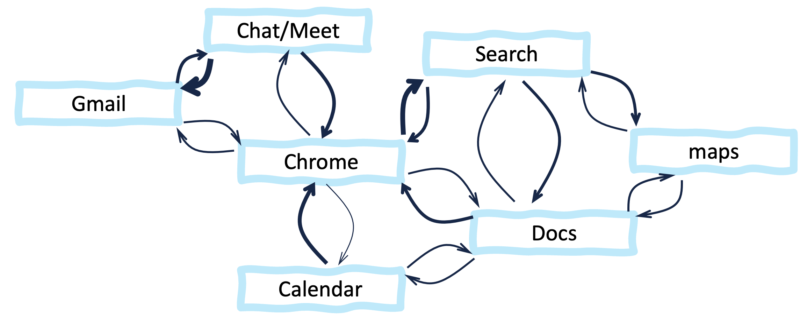
Figure B7.1.1. Example mutually benefiting relationships among some Google products. For legibility, only a small subset of pairwise relationships are shown. The thickness of each arrow (edge) represents its strength (in this case, how much it encourages the use of the product in the target node). The locations of the network nodes are arbitrary. In this case, they were chosen to avoid edges crossing.
The many facilitating/encouraging interactions among the products of Google (or Microsoft, Meta, or any other company) create a company-level self-reinforcing positive feedback loop, in which if you rely on one product from a company, you are incentivized to use additional products from the same company. In Figure B7.1.2, the interactions among the subsidiaries and products of each conglomerate are abstracted away to focus instead on the way Google, Meta, and Microsoft compete for advertising income. Panels A-C schematically illustrate how a conceptual model can be converted to a network model of the type we will focus on for the rest of this chapter.
At any given time, the total amount of income from advertising is fixed by demand from advertisers, and each company tries to get as large a portion of this fixed sum and they can (panel A). The conceptual model in panel A is converted to an annotated network in panel B. Here, the total advertising income is modeled as having three competing portions (inside rectangular box), such that if one portion increases, the other two will have to decrease proportionately. Panel C shows a summary-view visualization of the network. Here, the annotations are “hidden”, the symbols for companies and advertising-income nodes are different (solid versus hatched disks), and the node sizes have been scaled to reflect the relative sizes of the three companies 62 to reflect the hypothesis that market-share is proportional to company size.
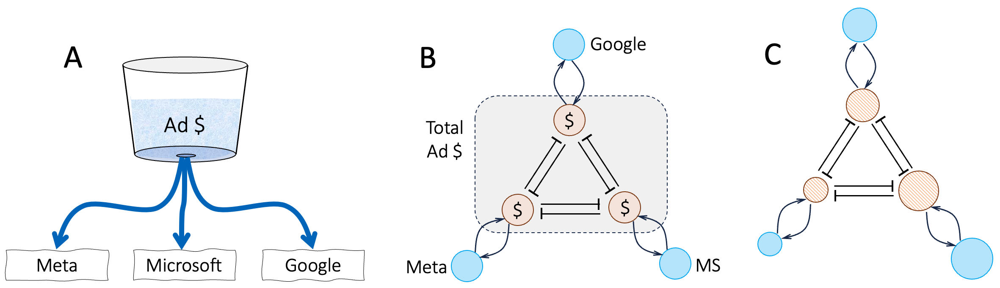
Figure B7.1.2. Constructing a network model of competition for advertising income among Google, Meta, and Microsoft. A. conceptually, we can model the total advertising market as a fixed reservoir (of advertising dollars) from which each company tries to take as much as it can. B. an annotated network model. Competition for limited demand from advertisers is modeled as mutually-inhibiting advertising market shares among the three players. C. same as panel B, but with the annotations “hidden” to make the network structures easier to see. Node sizes are drawn proportional to the company market capitalization.
Figure 7.1 shows a network representation of an example large-scale Human System 63. In this case, the nodes are English Wikipedia pages and the edges are web links from one page to another (indicating subject relationships).
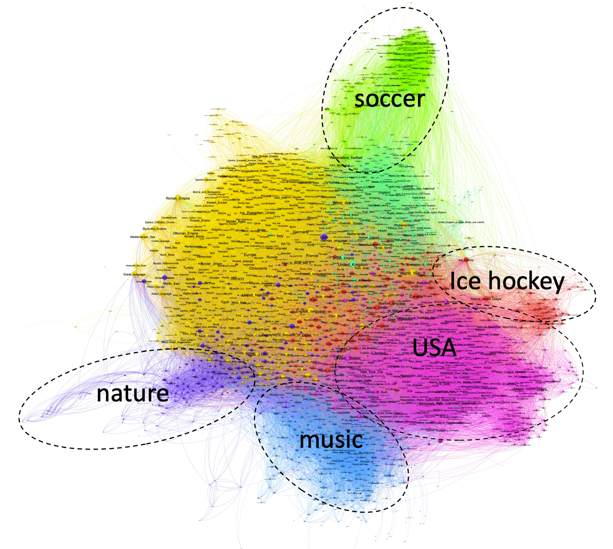
Figure 7.1. The network of links among the 2,500 Wikipedia pages with most links.
As of June 2024, Wikipedia had more than 35 million web pages. It is common for Wikipedia pages to cross-reference each other. The figure shows the network of cross links among the top 2,500 pages with the most links. Pages with more cross-links are placed closer to each other, creating spatial clusters of topically-related web-pages. The largest clusters are indicated with different colors. I have labeled a few of the clusters with topic labels that seem to be shared among the cluster members. I am including this figure here in order to point out that Human networks are often enormous and require specialist methods and software to explore them reliably (the full Wikipedia network would be more than 10,000 larger than the subset shown in Figure 7.1).
In the rest of this chapter, I will use very small portions of larger networks to illustrate specific points. Keep in mind that real networks are much bigger, and bigger networks often have more links per node, and more loops. An excellent and extensive introduction to large scale network analysis and characterization approaches is provided by Albert-Lazlo Barabasi’s online book Network Science 64. Here, I will focus on the prevalence of feedback loops in networks.
Figure 7.2 shows three examples of networks, each of which has a distinct characteristic that I would like to highlight. Panel A shows a tiny portion of the pattern of Twitter (now X) re-tweets of election-related posts during the three weeks prior to the Spanish general election of 2019 (the full published network 1 has close to 200,000 nodes). The nodes in the network are accounts that posted initial tweets (coral) and accounts that re-tweeted these posts (blue). The links in the network are directed from the tweeter to the re-tweeter. Nodes which share multiple links are placed nearer each other.
We see three distinct communities (clusters) of tweeters and their re-tweeters. Two other features of the network are of special interest to us. First, note how the tweeters and their re-tweeters form distinctive hub-and-spoke patterns in the network. Second, note that the three or four different clusters of users are connected to each other, suggesting overlapping political interests (this is because I selected a particular region in the larger network). The take-away point is that the network structure can tell us many things about the community even though we don’t know the content of the tweets.
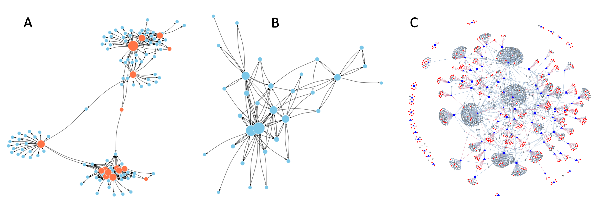
Figure 7.2. Three example networks. A. The network of Twitter (X) tweets and re-tweets during the 2019 Spanish general election. B. The network of email communications among staff at a research institute. C. The network of interactions among schizophrenia genes.
Panel B in Figure 7.2 shows a small portion of the pattern of email exchanges at a European research institution 2. In contrast to the Twitter network in panel A, the nodes in this network have many back-and-forth loops between pairs of employees (self-loops indicating that the sender CCed themselves are not shown). Note also that the number of connections per node (indicated by the node size) varies much more smoothly than in panel A. Another key observation here is that even considering something quite specific like electronic exchanges among a small number of individuals, two networks can have very different structures, and these differences are informative.
Panel C in Figure 7.2 illustrates interactions among genes associated with schizophrenia 3,4. Here, the nodes are genes and the edges indicate physical interactions between the products of the genes. Note that in this case the edges are not directed. Every edge indicates a mutual and equal interaction between two gene products (nodes). Also, the proteins and other molecules produced by genes can bind themselves (dimerization, multimerization), but such self-loops are not shown here because the purpose of this network was to explore potential interactions among different schizophrenia-associated genes.
As you might be expecting by now, the structure of the network in panel C provides several insights about schizophrenia genes. The blue nodes in the network are genes previously implicated in schizophrenia by genetic studies. The gray nodes are other genes whose products interact with the candidate schizophrenia genes. The edges indicate these interactions, and nodes with more interactions are placed closer to each other in the network. We see that a large majority of schizophrenia genes form a single cluster of interconnected genes. This suggests these genes may be involved in regulating closely related cellular processes. In contrast the smaller clusters of genes around the periphery of the figure are likely involved in different cellular processes. The red nodes are novel genes predicted to contribute to schizophrenia and their location in the network suggests their potential function. One final takeaway from this particular example is that the connectivity of the nodes is a mix of the hub-and-spokes structure in panel A and the more distributed structure of panel B.
7.2 Frequency of Loops in Archetypal Network Models
As I mentioned above, the structures of networks can say a lot about them. A corollary of this observation is that specific instances of networks tend to have specific characteristics, making generalizations difficult. Nonetheless, generalized models can provide broad-brush estimates and upper and lower bounds on what we may expect. So, in this section, I will look at the predicted frequency with which loops occur in a few idealized, archetypal versions of real-life networks.
Box 7.2 describes the characteristics of three of the most commonly encountered network archetypes. All three networks were generated randomly, but the choice and number of connections per node and the resulting network structure is different in each case. These differences in turn create many additional differences in network characteristics. For example, the maximum distance (the number of node hops) between any two nodes is much longer in the Erdos-Renyi network compared to the other two. For this reason, the Barabasi-Albert and Watts-Strogatz networks are sometimes called “small-world” networks 65.
Box 7.2. Three Network Archetypes Often Seen in Human Systems
Figure B7.2.1 shows examples of the three most common network models of Human Systems.
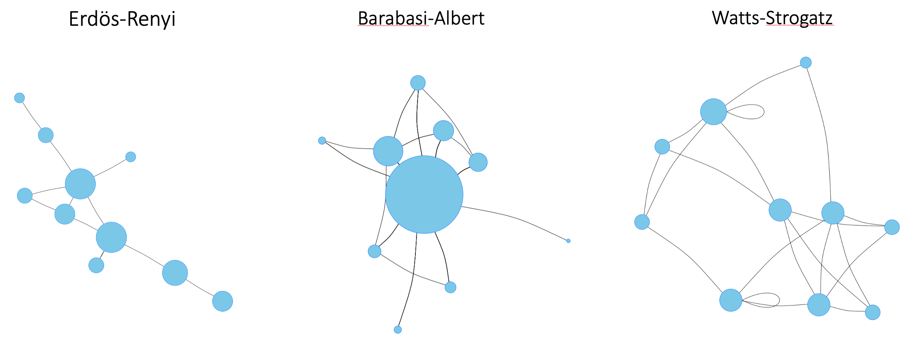
Figure B7.2.1. Three common network archetypes. In each network, the size of a node is proportional to the number of its connections. The network edges can be directed or undirected. Here, only undirected nodes are shown for simplicity.
The Erdos-Renyi model is named after the Hungarian mathematicians Paul Erdős and Alfréd Rényi, who first suggested the model in 1959 5. Erdos-Renyi networks are generated by first drawing the desired number of nodes on a blank page, and then repeatedly selecting two nodes at random and connecting them. Each pair of nodes is selected without considering how many connections it already has, so a new edge has an equal probability of falling anywhere in the network.
In the Watts-Strogatz network, we start by placing all the nodes in a circle, and connect each node to a given number of its nearest neighbors. We then repeatedly select an edge at random and replace it with an edge between two as yet unconnected nodes. The edge-rearrangements create shortcuts between nodes, so that Watts-Strogatz networks end up with much shorter average distances between their nodes than Erdos-Renyi networks.
Barabasi-Albert networks also have short average distances between their nodes, but for a different reason. Barabasi-Albert networks are constructed one node at a time. Each time a node is added, it is connected to one or more existing nodes in the network with a probability that is a function of the node’s number of connections. This creates a positive feedback loop, the more connections a node has the more likely it is to get more, so we end up with some nodes having many connections while most nodes have few.
To highlight the differences among these network archetypes, Figure B7.2.2 shows the connectivity-per-node differences between Erdos-Renyi and Barabasi-Albert networks.
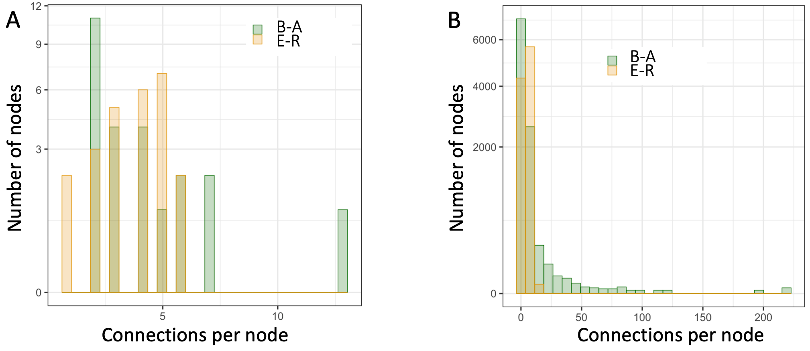
Figure B7.2.2. Difference in the connectivity patterns of two classes of networks. B-A = Barabasi-Albert; E-R = Erdos-Renyi. A. Connectivity per node differences between two specific example archetypal networks of 25 nodes and 94 edges (connections) each. B. Connectivity differences between two such archetypal networks each with 10,000 nodes and 40,000 connections.
Depending on the choice of parameters, the Barabasi-Albert and Watts Strogatz models can generate networks with subtle differences in their characteristics. There are also many other small-world-like network models, each proposed to capture a particular observed characteristic. Consistent with the diversity of network models, the exact frequency of feedback loops will vary across different real-life networks. Nonetheless we can make some broad-brush estimates of the prevalence of feedback loops in Human Systems.
To estimate the frequency of feedback loops in networks, we first need to identify all occurrences of network edges that form a closed circle of nodes each occurring once as a source and once as a target, e.g. A → B, B → C, C → A. Such circles are known as cycles. Cycles occur in both directed and undirected networks. In undirected networks, we assume that two nodes connected by an edge influence each other equally and mutually. So, in an undirected network, a cycle can act as a feedback loop in either direction. Figure 7.3 shows examples of undirected and directed cycles.
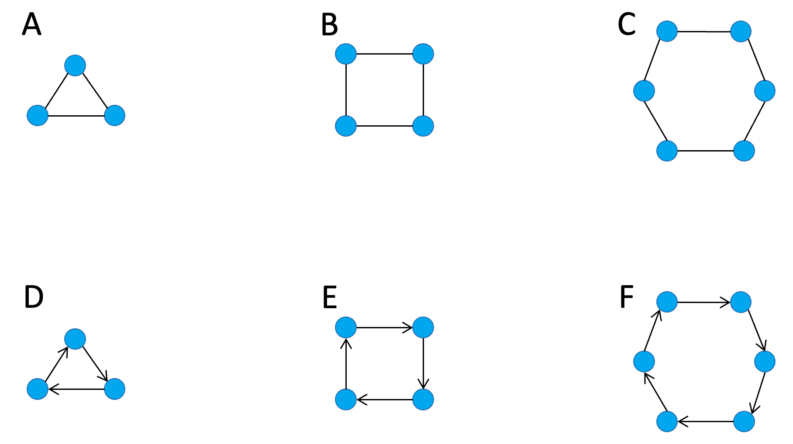
Figure 7.3. Examples of undirected and directed cycles in networks. (A-C) Undirected cycles of size 3, 4, and 5. (D-F) Directed cycles of size 3, 4, and 5.
Interactions among network nodes can be activating/enhancing/positive, or inhibitory/repressive/negative. We saw earlier that the repression of a repressor can create a positive feedback loop. Generalizing this concept, if we assign a positive sign to activating influences and a negative sign to inhibiting influences, then cycles can act as positive or negative feedbacks depending on whether the product of the signs of all the edges in the loop is positive or negative. So, in random graphs, roughly half of all cycles will be positive feedback loops.
In Erdos-Renyi networks, the direction of each edge is assigned independently of the existing nodes and edges, so the number of directed loops can be easily calculated from the number of undirected cycles in the network. Figure 7.4 shows the distribution of directed feedback loops of size 1 (i.e. nodes with a direct feedback onto themselves), and cycles of size 2 (i.e. feedback loops of the type A rightarrow B, B rightarrow A) in Erdos-Renyi networks of various sizes 6.
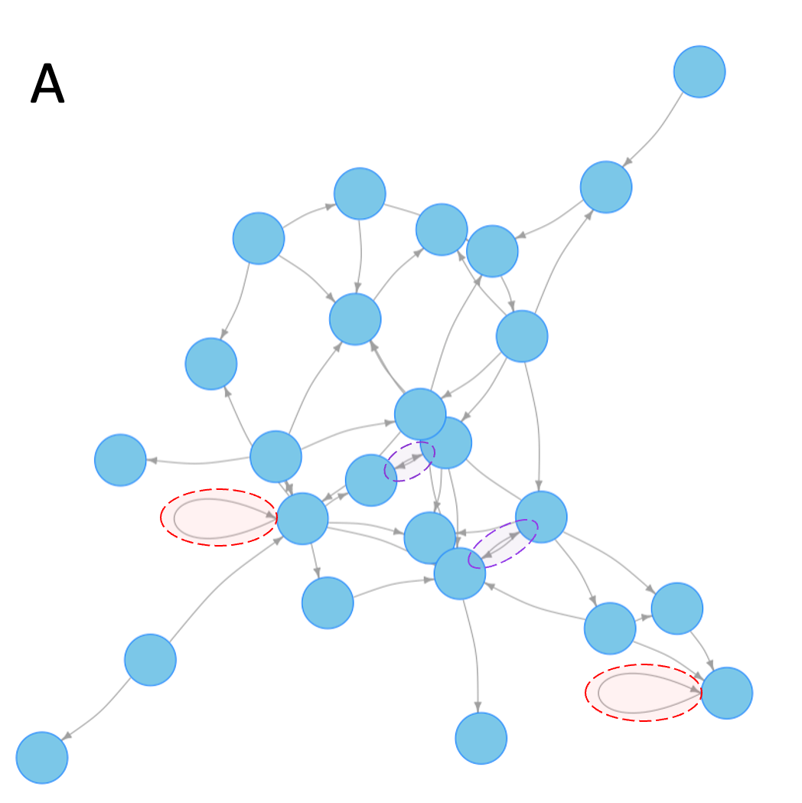
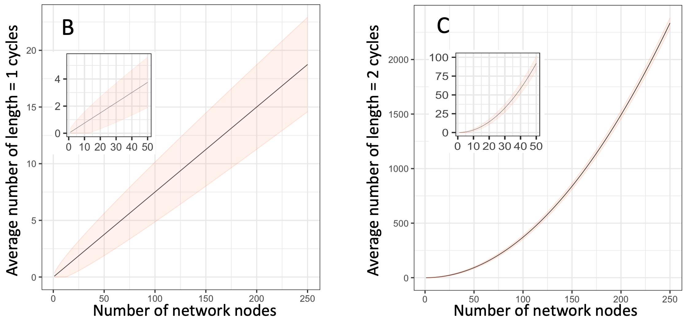
Figure 7.4 Frequency of length 1 and length 2 loops in Erdos-Renyi random graphs. For all 3 panels, I chose the connection probability to be such that all or nearly-all nodes would form a single connected network. A. An example network. Examples of length 1 and length 2 loops are highlighted with red and blue dashed ovals respectively. B. Frequency of length 1 loops in networks of 1 to 250 nodes. Inset shows an enlarged view of the area with 1-50 nodes. Since Erdos-Renyi networks are randomly generated, the shaded area marks the range of values expected in about two-thirds of simulated random networks. C. Same as in (B) but for loops of length 2. Inset shows an enlarged view of the area with 1-50 nodes.
The number of loops depends on the average number of connections per node. For the examples shown, I selected the connectivity parameter such that almost every node in the network is connected to at least one other node. For these networks, we see that roughly 1 in 10 nodes have a self-loop, about half of which will act as positive feedbacks. The frequency of feedback loops involving one other node (length 2 loops) is so large that for networks of a few dozen nodes or more, nearly every node will have at least one positive feedback loop.
In the case of small world networks, I will focus on undirected cycles, because as we saw in Figure 7.3, the distribution of edge-directions in real-world networks varies considerably. Undirected networks usually exclude cycles of length 1 and 2. Length 1 undirected cycles have no clear interpretation (e.g. a person talking to her/him-self), while length 2 undirected cycles are the same as a single undirected link.
As discussed, edge directions in Human Systems depend on the specific type of interaction being modeled. If, for the sake of broad generality, we make the simple assumption that edge directions are assigned randomly to each new edge, then for length 3 cycles a quarter (2 out of 8 possible configurations) will form a loop. For length 4 cycles, 1-in-8 cycles will be loops, and for length 5 cycles 1-in-16 cycles will be loops. Plugging these numbers into the curves in Figure 7.4A, suggests more than a quarter of the nodes in Barabasi-Albert networks are likely to have a positive feedback loop operating on them.
Figure 7.5A shows the frequency of cycles of length 3, 4, and 5 in undirected Barabasi-Albert networks 7. We see that on average every node is likely to be part of roughly 10 cycles of length 3, 4, or 5. Based on this figure, it is tempting to think that if we consider larger and larger cycles, we will find more and more feedback loops in small world networks. In practice, two considerations ultimately limit the number of cycles per node.
First, if communication along each edge is imperfect (noisy) then as loops get larger and larger, the feedback will get noisier and noisier. Second, depending on the average number of edges per node, the number of nodes in the network, and the exact method used to create the network, at some point the expected number of cycles saturates and then starts to decline. Using a particular small world network model for which cycle statistics are computationally fast and easy to calculate 8, Figure 7.5B schematically illustrates this pattern.
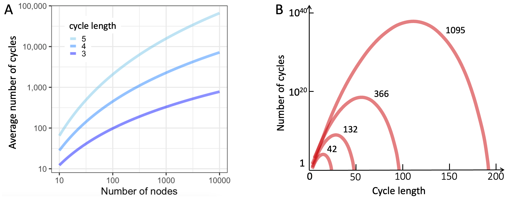
Figure 7.5. Prevalence of cycles in small world networks. A. Undirected Barabasi-Albert networks with more than a dozen nodes contain large numbers of loops of involving 3, 4, and 5 nodes. B. The number of cycles of a given length does not grow indefinitely. Beyond a threshold that depends on the size of the network and the average number of connections per node, the frequency of cycles, the number of cycles typically declines. Shown are cycle counts for four example network sizes (see numbers next to curves).
To summarize all of the above discussions, relatively short feedback loops arise very commonly in the most common network models used to study Human Systems.
7.3 Prevalence of Feedback Loops in Biological and Human Systems
Many specific instances of positive and negative feedback loops have been found in physiological, ecological, evolutionary, and societal networks. But estimating the overall prevalence of positive feedback loops in human and natural systems is more challenging.
Face-to-face interactions are – by definition – bidirectional feedback loops. But the frequency and significance/impact of face-to-face interactions are highly context-dependent. For many human systems, technological limitations make it difficult to collect large-scale data on the prevalence of feedback loops. Online social networks are technically easier to mine and analyze than ad-hoc human interactions 9–11. But commercial and ethical concerns limit research to aggregated and/or subsetted data, which typically has inherent biases 1266. These considerations notwithstanding, in this section, I will review the role of feedback in the available data on human and biological networks.
Let’s start with the networks of connections to friends and family that we build and maintain through face-to-face interactions (i.e. where use of electronic interactions is not a requirement). Not all relationships are equal. Family relationships are qualitatively different from friendships. Our connections with work-colleagues, neighbors, and leisure-activity partners (clubs, teams, etc.) all have different qualities. One way to simplify all these relationships is to order them along a quality scale: intimate → close → good → personal → acquaintance → familiar.
Along the above scale, ‘personal friends’ represent the largest category of our face-to-face contacts where we know the individuals well-enough to have regular, meaningful, and non-transactional exchanges with them (or in Stephen Fry’s memorable words all the people you would not hesitate to go over and sit with if you happened to see them at 3a.m. in the Departure Lounge at Hong Kong Airport.” 13). Interactions between pairs of personal friends are bidirectional. Both parties influence each other, forming a direct feedback loop that is more likely to be positive (friends agreeing with each other) than negative (one party repeatedly diminishing or countering the other party, and being applauded for it). So, on average, how many such feedback loops do we have?
In a now-famous 1998 article 14, the evolutionary psychologist Robin Dunbar argued that the human neocortex grew large in order to allow more complex social interactions involving larger groups. Using observational data from various human societies, Dunbar found that the number of people an individual can have a “personal relationship” with is around 150, a number that has largely withstood the test of time 15,16.
Needless to say, the average number of personal friends varies across individuals and cultures 17. For example, 19th century religious settlements in the US tended to be slightly bigger, while their secular counterparts tended to be smaller than 150, and modern-day Israeli kibbutzim centered around commercial ventures that require a larger labor force are on average closer to 500 people in size 18.
Taking Dunbar’s number as a rough estimate, we each engage in recurring self-reinforcing feedback loops with around 150 friends and family. Of course, not all relationships are equal. Face-to-face interactions can be short or long, one-on-one or in a group, deeply meaningful or superficial, etc. Box 7.3 provides examples of such variations. But, as discussed earlier, weak connections can still have big impacts on outcomes 19.
Box 7.3. Characteristics of Human Face-To-Face Interactions
Across a variety of settings, Robin Dunbar and his colleagues find that we spend about 40% of our time with the five people closest to us, and another 20% of our time with the next 10 people that we feel closest to 13. The implication is that we interact much less (and form much weaker feedback loops) with the remaining 135 people in our circles of roughly 150 personal friends 67. As illustrated in Figure B7.3.1, a pattern of many brief interactions combined with a handful of much longer interactions seems to be characteristics of most human face-to-face contacts. Our friendships are not the only face-to-face contacts that can create self-reinforcing feedback loops. More generally, we “simultaneously operate within multiple, overlapping social networks.” 20 So, we are each likely to form strong, self-reinforcing feedback loops with more than 15 people.
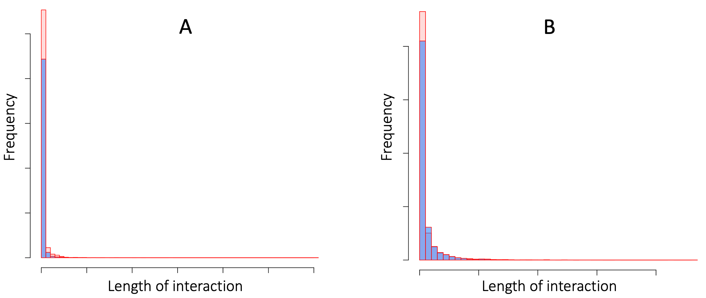
Figure B7.3.1. The lengths of Face-to-face interactions at a scientific conference (panel A), and in a French Primary School (panel B). In each panel, interaction durations (arbitrary scale) are plotted for two separate days. In both settings, the vast majority of the interactions are very brief, but there is a very long tail of long-duration interactions. Data are from 21.
Contact duration is important, but the context of the contact matters too. For example, when I lived in England, for about 15 years, I commuted to my university by a shuttle bus whenever the weather made the cycle-path too muddy (which was most of the time!). Every day, I would board the bus along with about a dozen other staff and faculty that I gradually got to know. But I developed a close personal friendship (involving non-work activities) with only one of them. The figures below illustrate qualitative encounter differences in terms of two more measurable criteria.
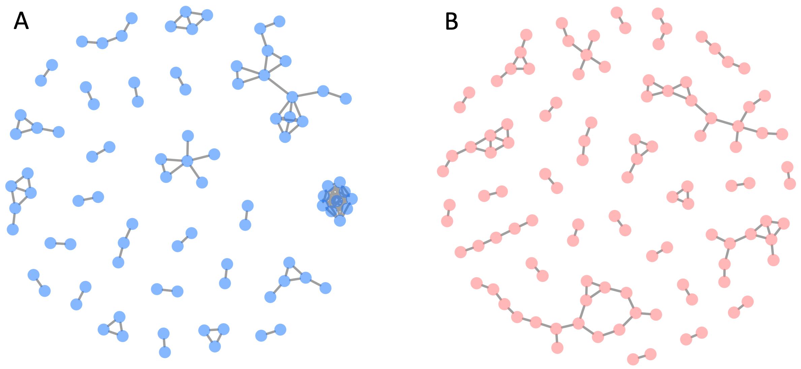
Figure B7.3.2. Examples of group sizes during simultaneous face-to-face interactions (same data as in Figure B7.3.1). Panel A shows interactions among attendees at one particular time point at a scientific conference. The nodes (disks) are individual attendees. The edges connecting attendees indicate interaction. At the 3 o’clock position, there is a cluster of 10 attendees all interacting with each other. In contrast, directly above this cluster are a group of attendees interacting in distinct sub-groups. Panel B shows the pattern of interactions at a French primary school.
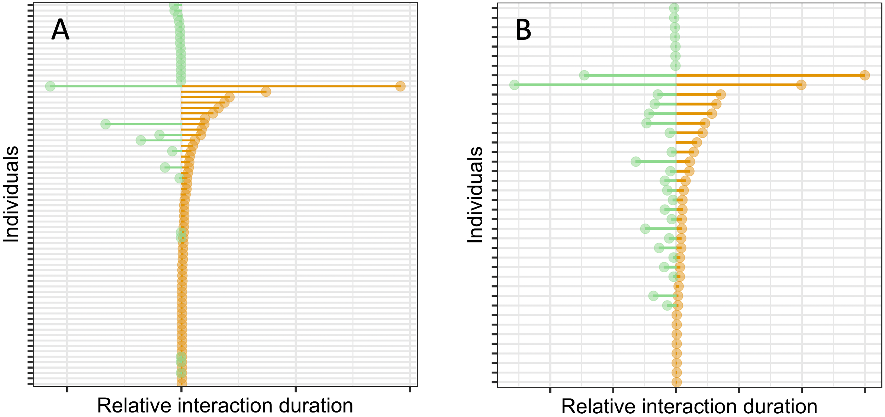
Figure B7.3.3. Comparison of interactions of one individual on two different days (same data as in Figure B7.3.1). Panel A is for a selected attendee at a scientific conference. Panel B is for one child at a French primary school. In each panel, bars on the righthand side indicate the length of interaction on day 1. Bars on the lefthand side indicate the duration of interaction on day 2. Near the top and bottom of each plot are a series of mostly one-on-one very short encounters. Note the difference between the two settings for long-duration interactions. At the school, most long encounters occurred on both days. At the conference, many day 1 long-encounters did not recur on day 2.
How do online social networks differ from face-to-face interaction networks? In 2013, Stephen Wolfram – designer of the symbolic computation engine Mathematica – posted an analysis of Facebook interactions drawing on data from a million subscribers to a Facebook Mathematica service 68. Wolfram’s analysis suggests the distribution of the number of friends per Facebook user is highly skewed. There are a large number of Facebook users with very few “friends”. The median number of friends in Wolfram’s sample was 342 69. Only a rapidly decreasing number of users had more than the median number of “friends”. Another interesting finding by Wolfram was that the network of any single user’s friends is usually highly connected; i.e. the user’s friends are also friends with each other. Consistent with this finding, a year earlier, in a network of 4,039 friends of 10 Facebook users 22, more than a quarter of all participants were part of a 3-node cycle 23, creating a total of more than 1.6 million 3-node cycles.
These findings are illustrated schematically in Figure 7.6, which shows the Facebook connections among the friends of a single example user. The node representing the reference user is not included in the network because it would be connected to every node shown, making the figure illegible. But every time two friends of the user have a connection between them (see example highlighted in orange), then the connection of the user to these two friends creates a 3-node triangular cycle. In addition, because there are many connections among the user’s friends, some 3-node cycles also arise directly among the user’s friends (see example highlighted in red).
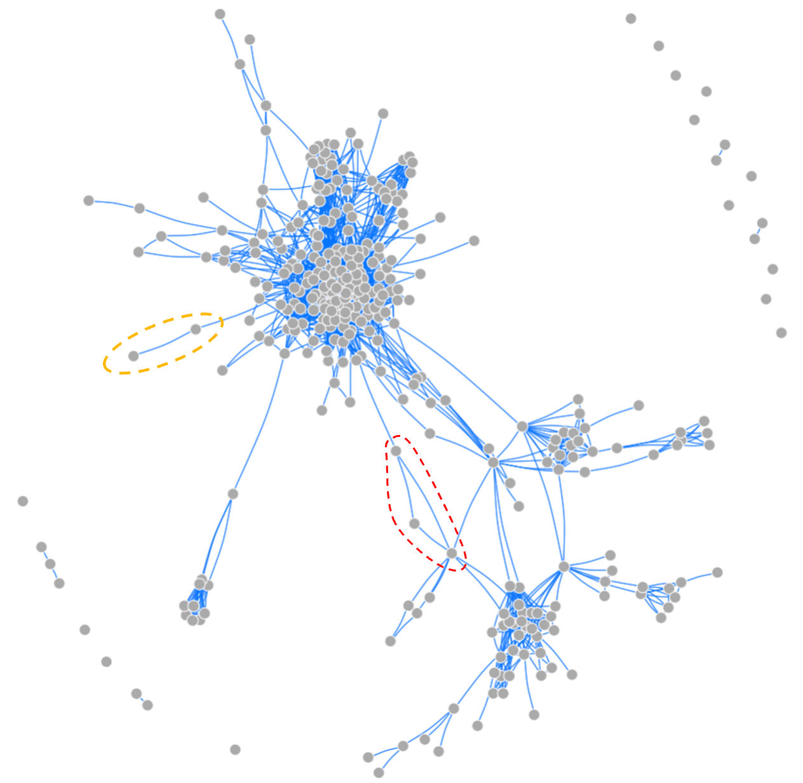
Figure 7.6. The network of connections among a single Facebook-user’s friends 70. Around the periphery, there are a few “Friends” not connected to other “friends” of the user. But a large majority of the user’s friends are also friends with each other, and form multiple distinct clusters. The dashed orange oval on the left highlights an example of two friends with whom the user makes a triangular network (not shown). The red dashed oval highlights a triangular relationship among three of the user’s friends. When the user’s node is included, these three nodes result in three triangular connections.
To end this chapter, and as a prelude to Chapter 8, Boxes B7.4 and B7.5 review the prevalence of self-reinforcing feedback loops in two biological systems: (i) molecular regulation of cell and organ behavior, and (ii) interactions among neurons in our brains. The takeaway message is that our cells, organs, bodies, and even thought processes are regulated by widespread feedback loops. In all such systems, negative feedback is employed to achieve stability, and positive feedback is used to amplify small signals or create diversity.
Box 7.4. Feedback Regulation of Cellular and Organ Behavior
Attempts to characterize the role of feedback loops in biological systems go back at least 150 years. Claude Bernard who first formulated the concept of homeostasis in mid nineteenth century, postulated that it is through compensatory responses (what we would now call change-limiting or negative feedback) that a body “liberates” itself from slavery to external conditions 24,25. Bernard argued that being able to maintain a constant temperature, and constant levels of water, energy sources, and oxygen, allows our bodies to function reliably under diverse conditions. Homeostasis, the maintenance of stable states in the body, was thus one of the earliest hints that feedback loops play an essential and ubiquitous role in human biology.
In 1932, Walter Cannon, who had coined the term homeostasis just six years earlier, published a landmark book about homeostasis 26 in which he formulated a set of propositions asserting that homeostasis is a self-organized process that actively maintains a body’s stability.
In the years since the works of Bernard and Cannon, it has become increasingly clear that physiological homeostasis is achieved primarily through change-limiting/negative feedback loops. In contrast, biological and natural processes that create new patterns and greater diversity (e.g. embryonic development, evolutionary and ecological responses to environmental changes) require change-reinforcing/positive feedback loops 27. A key development in this respect occurred in the late 1960’s. In a series of celebrated computer simulations, Stuart Kauffman showed that complex processes such as metabolism and gene expression in cells are invariably controlled by combinations of positive and negative feedback loops 28–31.
A decade later, the Belgian biologist-turned-mathematician Rene Thomas refined Kauffman’s hypothesis by suggesting that the processes that permanently change the state or identity of a cell (e.g. when a stem cell differentiates into a particular cell type such as a skin or liver cell) must be regulated by at least one positive feedback loop 32.
It took another 20 years for experimental verification of these theoretical insights. In 1998, one of Rene Thomas’ former students, Denis Thieffry, and a group of Mexican scientists analyzed the regulatory interactions of 55 regulatory genes in the well-studied bacterium E. coli 33. They reported that more than 80% of the genes were regulated by feedback loops.
The 55 bacterial genes studied by Thieffry and colleagues were mostly involved in regulating physiological functions, and as predicted by Bernard and Cannon, more than three-quarters of them turned out to have a negative, change-limiting effect on their own production. In addition, just over 10% of the genes had positive/change-reinforcing feedback loops. As implied by Rene Thomas’ theoretical analyses, several of these genes were involved in generating strong, self-reinforcing responses to small environmental changes.
Because of technological limitations at the time, the data Thieffry and colleagues analyzed captured only a small proportion of the full set of regulatory interactions among the genes studied. So, leaving readers of the report to wonder if the high prevalence of feedback loops found by Thieffry and team was a technological artifact.
In May 2002, a research group led by Uri Alon at the Weizmann Institute in Israel used a larger and much richer data set to confirm that between 50% and 70% of regulatory genes in E. coli are controlled by a feedback loop 34. Again, the feedback loops found were nearly all physiology-related and change-limiting (a few months after their E. coli paper, Alon and colleagues reported that loops were also common in web-page links, and electronic circuit diagrams 35). Since then, positive feedback loops have been shown to regulate a wide range of cellular processes (e.g. cell-cell signaling, and cell division, differentiation, and movement), in a variety of organisms (e.g. bacteria, yeast, parasitic organisms, mammalian cells), and in diverse settings (e.g. environmental sensing, commitment to cellular identity, diversity generation, and learning by neurons) 36–42.
E. coli are single-celled organisms. So, the question remained: Are animal cells regulated in an analogous manner? In a 2015 book 43 on how embryonic development is regulated by genes, Isabelle Peter and Eric Davidson described 16 gene-regulatory positive feedback loops and eight mutual-repression loops that have been experimentally validated in five different species. Based on these findings, they suggested that these motifs are fundamental building blocks of the evolution of embryonic development.
Box 7.5. Feedback Connections Among Neurons
The neural networks of our brains are not fixed, hard-wired structures. Some connections decay or are removed, some are actively maintained and refreshed, and new connections are created as we learn new patterns, associations, and memories 44–47. Given the thousands of connections that most neurons make and maintain, it is not surprising that many neurons form feedback loops.
In 2018, a multi-institute consortium of researchers completed the monumental task of imaging all the roughly 130,000 neurons and more than 30 million connections in the brain of a fruit fly using electron microscopy 48. This data set is so large and complex that it took another six years for the researchers to generate a complete, annotated map of all the individual neuron-neuron connections 49–51. A preprint released in February 2024 52 offers some remarkable statistics. In particular, the team identified 77,607 2-neuron feedback loops and 66,835 a 3-neuron feedback loops (some of these loops may be overlapping). Example loops are shown in Figure B7.5.1. Overall, more than a quarter of all the neurons had at least one reciprocal (2-neuron) feedback loop.
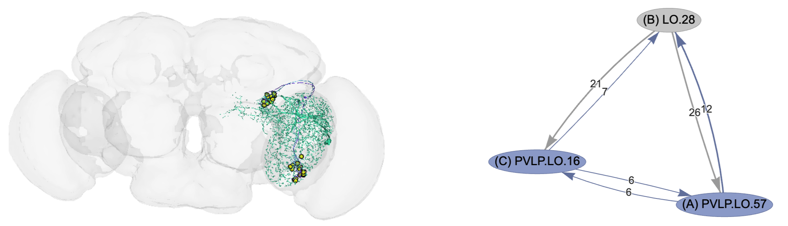
Figure B7.5.1. Example triangular neural feedback connections in the fly brain. The right panel shows three neurons in the Anterior Ventrolateral Protocerebrum region. The neurons have pairwise mutual connections and also form triangular loops in both directions. The numbers on each edge indicate the number of connections represented by the edge (more connections indicate stronger interactions). The left panel shows the physical location of the three neurons and their neurites (output axons and input dendrites) in the context of the fly brain. Figures generated using the Flywire Codex Connectome Data Explorer, see https://flywire.ai/, and https://codex.flywire.ai/.
7.4 References
1. Barandiaran, X., Calleja-López, A. & Cozzo, E. Defining Collective Identities in Technopolitical Interaction Networks. Fronitiers Psychol. 11, 1549 (2020).
2. Leskovec, J., Kleinberg, J. & Faloutsos, C. Graph Evolution: Densification and Shrinking Diameters. vol. 1 (ACM Transactions on Knowledge Discovery from Data, https://snap.stanford.edu/data/email-Eu-core.html, 2007).
3. Ganapathiraju, M. et al. Schizophrenia interactome with 504 novel protein–protein interactions. NPJ Schizophr. 16012 (2016).
4. https://github.com/empet. Schizophrenia Interactome Visualization. (https://github.com/empet/Networks/blob/master/Plotly-schizophrenia-interactome.ipynb, 2024).
5. Erdös, P. & Rényi, A. On Random Graphs I. Publ. Math. Debr. 6, 290–297 (1959).
6. Butts, C. T. Cycle Census Statistics for Exponential Random Graph Models. (2006).
7. Bianconi, G. & Capocci, A. Number of Loops of Size h in Growing Scale-Free Networks. Phys. Rev. Lett. 90, 078701 (2003).
8. Klemm, K. & Stadler, P. Statistics of cycles in large networks. Phys. Rev. E 73, 025101(R) (2006).
9. Kligler-Vilenchik, N., Baden, C. & Yarchi, M. Interpretative Polarization across Platforms: How Political Disagreement Develops Over Time on Facebook, Twitter, and WhatsApp. Soc. Meia Soc. 1–13 (2020).
10. Allcott, H., Gentzkow, M., Mason, W., Wilkins, A. & et al. The Effects of Facebook and Instagram on the 2020 Election: A Deactivation Experiment. Proc. Natl. Acad. Sci. USA 121, e2321584121 (2024).
11. Quattrociocchi, W., Scala, A. & Sunstein, C. R. Echo Chambers of Facebook. (2016).
12. Olteanu, A., Castillo, C., Diaz, F. & Kıcıman, E. Social Data: Biases, Methodological Pitfalls, and Ethical Boundaries. Front. Big Data 2, 13 (2019).
13. Dunbar, R. I. M. Friends: Understanding the Power of Our Most Important Relationships. (Little, Brown, 2021).
14. Dunbar, R. I. M. The Social Brain Hypothesis. Evol. Anthropol. 6, 178–190 (1998).
15. Casari, M. & Tagliapietra, C. Group Size in Social-Ecological Systems. Proc. Natl. Acad. Sci. USA 115, 2728–2733 (2018).
16. Dunbar, R. I. M. The Social Brain Hypothesis Thirty Years On: Some Philosophical Pitfalls of Deconstructing Dunbar’s Number. Ann. Acad. Sci. Fenn. 2, 8–27 (2023).
17. Dunbar, R. I. M. Structure and Function in Human and Primate Social Networks: Implications for Diffusion, Network Stability and Health. Proc. R. Soc. A 476, 20200446 (2020).
18. Dunbar, R. I. M. & Sosis, R. Optimising Human Community Sizes. Evol. Hum. Behav. 39, 106–111 (2018).
19. Granovetter, M. The Strength of Weak Ties. Am. J. Sociol. 78, 1360–1380 (1973).
20. Redhead, D. & Power, E. A. Social hierarchies and social networks in humans. Philos. Trans. R. Soc. B 377, 20200440 (2022).
21. Génois, M. & Barrat, A. Can Co-Location Be Used as a Proxy for Face-to-Face Contacts? EPJ Data Sci. 7, 11 (2018).
22. McAuley, J. & Leskovec, J. Learning to Discover Social Circles in Ego Networks. (Proceedings of the Neural Information Processing Systems Conference, http://snap.stanford.edu/data/ego-Facebook.html, 2012).
23. Leskovec, J. Social Circles: Facebook. (Stanford Network Analysis Project, http://snap.stanford.edu/data/ego-Facebook.html, 2024).
24. Modell, H. et al. A Physiologist’s View of Homeostasis. Adv. Physiol. Educ. 39, 259–266 (2015).
25. Cooper, S. J. From Claude Bernard to Walter Cannon. Emergence of the Concept of Homeostasis. Appetite 51, 419–427 (2008).
26. Cannon, W. The Wisdom of the Body. (https://digital.library.cornell.edu/catalog/chla3117174, 2024).
27. Peter, I. & Davidson, E. Assessing regulatory information in developmental gene regulatory networks. Proc. Natl. Acad. Sci. 114, 5862–5869 (2017).
28. Kauffman, S. Homeostasis and differentiation in random genetic control networks. Nature 224, 177–178 (1969).
29. Kauffman, S. Behaviour of Randomly Constructed Genetic Nets: Binary Element Nets Stuart Kauffman University of Cincinnati. (Towards a Theoretical Biology: An IUBS Symposium 3, 1968).
30. Kauffman, S. Behaviour of Randomly Constructed Genetic Nets: Continuous Element Nets. (Towards a Theoretical Biology: An IUBS Symposium 3, 1968).
31. Kauffman, S. Metabolic stability and epigenesis in randomly constructed genetic nets. J. Theor. Biol. 22, 437–467 (1969).
32. Thomas, R. Logical Analysis of Systems Comprising Feedback Loops. J. Theor. Biol. 73, 631–656 (1978).
33. Thieffry, D., Huerta, A. M., Perez-Rueda, E. & Collado-Vides, J. From specific gene regulation to genomic networks: a global analysis of transcriptional regulation in Escherichia coli. BioEssays 20, 433–440 (1998).
34. Shen-Orr, S., Milo, R., Mangan, S. & & Alon, U. Network motifs in the transcriptional regulation network of Escherichia coli. Nat. Genet. 31, 64–68 (2002).
35. Milo, R. et al. Network motifs: simple building blocks of complex networks. Science 298, 824–827 (2002).
36. Takano, T., Funahashi, Y. & Kaibuchi, K. Neuronal Polarity: Positive and Negative Feedback Signals. Front. Cell Dev. Biol. 7, 00069 (2019).
37. Mittal, D. & Narayanan, R. Network Motifs in Cellular Neurophysiology. Trends Neirosciences 47, 506–521 (2024).
38. Nofal, S. D. et al. A Positive Feedback Loop Mediates Crosstalk Between Calcium, Cyclic Nucleotide and Lipid Signalling in Calcium-Induced Toxoplasma Gondii Egress. PLoS Pathol. 18, e1010901 (2022).
39. Ratushny, A. V., Saleem, R. A., Sitko, K., Ramsey, S. A. & Aitchison, J. D. Asymmetric Positive Feedback Loops Reliably Control Biological Responses. Mol. Syst. Biol. 8, 577.
40. Ye, E., Kang, X., Bailey, J., Li, C. & Hong, T. An Enriched Network Motif Family Regulates Multistep Cell Fate Transitions with Restricted Reversibility. PLoS Comput. Biol. 15, e1006855 (2019).
41. Pomerening, J. R. Positive Feedback Loops in Cell Cycle Progression. FEBS Lett. 583, 3388–3396 (2009).
42. Ferrell, J. E. Feedback Loops and Reciprocal Regulation: Recurring Motifs in the Systems Biology of the Cell Cycle. Curr. Opin. Cell Biol. 25, 676–686 (2013).
43. Peter, I. & Davidson, E. Genomic Control Process Development and Evolution. (Academic Press, 2015).
44. Miehl, C., Onasch, S., Festa, D. & Gjorgjieva, J. Formation and Computational Implications of Assemblies in Neural Circuits. J. Physiol. 601, 3071–3090 (2023).
45. Magee, J. C. & Grienberger, C. Synaptic Plasticity Forms and Functions. Annu. Rev. Neurosci. 43, 95–117 (2020).
46. Südhof, T. C. The Cell Biology of Synapse Formation. J. Cell Biol. 220, e202103052 (2021).
47. Kast, R. J. & Levitt, P. Precision in the Development of Neocortical Architecture: from Progenitors to Cortical Networks. Prog. Neurobiol. 175, 77–95 (2019).
48. Zheng, Z. et al. A Complete Electron Microscopy Volume of the Brain of Adult Drosophila melanogaster. Cell 174, 730–743 (2018).
49. Shiu, P. K., Sterne, G. R., Spiller, N. & et al. A Drosophila Computational Brain Model Reveals Sensorimotor Processing. Nature 634, 210–219 (2024).
50. Dorkenwald, S., Matsliah, A., Sterling, A., Schegel, P. & et al. Neuronal Wiring Diagram of an Adult Brain. Nature 634, 124–138 (2024).
51. Schlegel, P., Yin, Y., Bates, A. S. & et al. Whole-Brain Annotation and Multi-Connectome Cell Typing of Drosophila. Nature 634, 139–152 (2024).
52. Lin, A. et al. Network Statistics of the Whole-Brain Connectome of Drosophila. bioRxiv https://doi.org/10.1101/2023.07.29.551086 (2024) doi:10.1101/2023.07.29.551086.